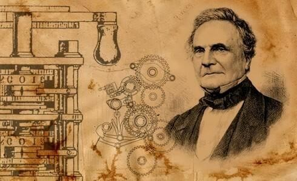

PERTEMUAN 2
SEJARAH, PERKEMBANGAN DAN KRITIK TENTANG TEKNOLOGI MAJU
A. TUJUAN PEMBELAJARAN
Setelah mengikuti materi pada pertemuan ke-2 ini mahasiswa mampu memahami sejarah perkembangan komputer dan mampu membedakan dampak positif dan negatif dari perkembangan teknologi komputer ini dari sisi aplikasinya.
1. Sejarah Awal Komputer
Awal mula evolusi komputer kemungkinan besar dimulai dengan keinginan manusia untuk memahami dan memanipulasi lingkungan. Manusia paling awal mengenali fenomena kuantitas dan menggunakan jari mereka untuk menghitung dan bertindak atas benda-benda material di dunia mereka. Kemajuan yang berkelanjutan bergantung pada pemanfaatan dan pengendalian kekuatan alam, listrik, cahaya, dan akhirnya potensi menakjubkan dari dunia kuantum, semua diubah menjadi format digital yang seragam, contoh alat hitung.
a. Sempoa
Kata abacus sendiri berasal dari bahasa Yunani ἄβαξ (abax) untuk "lempengan atau papan gambar”. Sempoa yang lebih dikenal sebagai alat bantu dalam perhitungan. Abaskus atau sempoa dalam bahasa inggris, orang Indonesia sendiri menggunakan alat sempoa. Awal mula sebuah komputer terlahir dari benda sederhana ini, yaitu sempoa atau juga disebut abaskus. Jadi sempoa merupakan cikal bakal komputer
b. Kalkulator Roda Numerik 1
Abacus mulai menghilang dan jarang digunakan lagi sejak kemunculan alat tulis seperti kertas dan pensil. Hal ini sangat terasa di benua Eropa. Penemuan mesin komputer lainnya muncul pada sekitar 12 abad kemudian. Kalkulator roda numerik yang dinamakan pascaline (numerical wheel calculator) ditemukan oleh seorang anak muda yang berumur 18 tahun yaitu Blaise Pascal (1623-1662), berkisar pada tahun 1642.

c. Kalkulator Roda Numerik 2
Seorang matematikawan serta filsuf dari Jerman yaitu Gottfred Wilhem von Leibniz (1646-1716) memperbaharui pascaline dengan penemuannya sekitar pada tahun 1694. Kemudian, tahun 1820 Charles Xavier Thomas de Colmar membuat kalkulator mekanik fungsi aritmatik dasar yang memiliki empat fungsi yaitu perkalian, pembagiam, penjumlahan, pengurangan. Dimana saat itu digunakan dalam perang dunia ke-1 karena dapat membantu dalam melakukan kalkulasi.
2. Sejarah Perkembangan Komputer
a. Blaise Pascal
Perkembangan komputer sejak masa Blaise Pascal (1623-1662) dimana Pascal mengembangkan kinerja komputer dari pendahulunya, dengan penemuannya yang membawa 8 jumlah bilangan. Berikut prinsip kalkulator yang dibuat Pascal: pada roda gigi pertama yang bergerigi 10, saat roda gerigi melakukan satu putaran (10), maka roda bergerigi yang kedua akan bergerak dan satu gigi akan bergeser dan gerigi pada roda akan berotasi hingga 10 kali (100) yang akan menggerakan roda gigi yang lainnya hingga mencapai 1000. Pada tahun 1649 ia di berikan penghargaan Royal Privilege dimana ini adalah hak yang dipergunakan untuk memproduksi dan memperjualkan mesin ciptaannya (kalkulator komputer).
Pada tahun 1652 barulah Pascal memulai produksi alat ciptaannya sebanyak 50 prototipe dimana ia dapat menjual sampai 36 mesin. Bisnis penjualan tersebut tidak semudah yang dipikirkan mengingat pascaline cendrung rumit dalam pengoperasiannya. Pascalinepun hanya dapat menambah dan membagi yang membuat para konsumen tidak menyukainya. Pada tahun 1652 penemuan tersebut berhenti diproduksi. Pascaline berhenti dalam kurun waktu belum mencapati 1 tahun. Kalkulator Pascaline muncul Kembali setelah sekitar 1.5 abad kemudian.
Gottfried W.Leibniz menemukan kalkulator yang dapat bersaing dengan Pascaline. Pada 1672, Stepped Reckoner temuan Leibniz ini sama bisa melakukan proses penambahan, pengurangan, perkalian dan pembagian. Lalu Leibniz yang meneruskan menulis namanya kedalam sejarah komputer.
b. Charles Babbage
Seorang Profesor Matematika asal Inggris yaitu Charles Babbage atau lebih dikenal sebagai Bapak komputer adalah gelar dari Charles Babbage. Sebuah komputer yang dapat diprogram merupakan gagasan dari Charles Babbage yang menjadikannya sebagai salah satu tokoh penting dalam dunia komputer. Charles Babbahe menemukan mesin baru sebagai bukti dari gagasannya tersebut. Meskipun pada akhirnya mesin tersebut tidak diselesaikan Charles Babbage dan kini dimuseumkan di Inggris.
Difference engine yang merupakan buatan Charles Babbage merupakan inspirasi yang melahirkan sejarah awal mula terbuatnya komputer. Pada tahun 1822 Charles Babbage mencoba menggunakan mesin untuk menghitung tabel matematika.
Mesin tersebut dirancang pertama kali sekitar 25.000 bagian dan beratnya sekitar 136.000 kg, lalu tinggi dari komputer ini mencapai 2,4 meter. Sama pentingnya dengan perhitungan yakni dua fungsi tambahan yaitu penyimpanan otomatis dan pengambilan informasi dalam bentuk kode dan eksekusi otomatis dari urutan operasi. Itulah alasan sejarahwan memulai dengan Mesin Analitik yang coba dibangun Charles Babbage pada abad kesembilan belas. Babbage tidak pernah menyelesaikan mesin itu, karena alasan yang hanya sebagian berkaitan dengan keadaan teknik mesin pada saat itu. Pada tahun 1830-an, ketika Babbage membuat sketsa ide untuk mesin (E. Ceruzzi, 2012).
c. Gottfred Wilhem von Leibniz
Komputer mengalami perkembangan yang pesat pada 1820, yaitu dimana kalkulator mekanik sudah bisa melakukan 4 operasi dasar aritmatika.
d. Herman Hollerith
Pada tanggal 29 Februari 1860, Herman Hollerith lahir dan berperan dalam sejarah komputer hingga dia meninggal dunia pada 17 November 1929. Mesin tabulator yang dibuat olehnya menggunakan punched card. Pada prosesnya, dikatakan memiliki kinerja yang sangat cepat dan dapat memproses berjuta-juta data statistik. Hollerith berfikir bagaimana caranya agar dapat membangun pemicu yang berasal dari sebuah koneksi elektrik dengan alat perhitungan yang dapat menyimpan segala bentuk informasi. Cara ini muncul ketika menggunakan angka sebagai kode. Data yang didapati oleh Hollerith dapat diletakkan (lubang) ke-sebuah kartu (punched card) yang memiliki lokasi yang sesuai atau lokasi dengan kondisi tertentu. Ide inilah yang menjadi dasar terbuatnya komputer era modern karena kartu ini bisa diurutkan maupun dijumlahkan menggunakan mesin. Selain itu data- datanya juga bisa disimpan.
e. Howard H. Aiken
Dengan memanfaatkan singnal elektromagnetik, Howard dapat menciptakan sebuah kalkulator elektronik. Diikuti oleh munculnya perkembangan komputer selanjutnya yaitu Electronic Numerical Integrator and Computer (ENIAC). John W John Presper Eckert (1919- 1995) merupakan 2 ahli yang berhasil membuat ENIAC.
f. John William Mauchly
Komputer-komputer terus dikembangkan oleh para ahli. Pada 1940-an John menemukan mesin yang bisa menyimpan data dan program ke dalam memori bernama Electronic Discrete Variable Automatic Computer (EDVAC) dan ini merupakan awal mula pembuatan CPU yang diperkiran muncul sejak masa tersebut.

3. Kritik Terhadap Perkembangan Teknologi Maju
Teknologi merupakan bagian dari kehidupan kita saat ini. Semua aktivitas hampir selalu melibatkan teknologi. Banyak manusia yang menganggap bahwa komputer sekedar barang elektronik biasa, padahal komputer termasuk ke dalam teknologi tepat guna seiring perkembangan zamannya dan memiliki makna yang sangat luas tergantung daripada kebutuhan manusia itu sendiri.
Dimana manusia tidak bisa melawan dengan kenyataan bahwa teknologi tentunya akan mendatangkan dampak negatif dan kesengsaraan bagi manusia yang ada. Tentunya akibat teknologi yang terus berkembang hari demi hari yang intinya mempermudah kegiatan manusia, ketika hal yang terjadi akibat adanya komputer semakin mudah, pastinya akan muncul rasa asing hingga muncul rasa kesepian karena telah terbiasa menggunakan teknologi, seperti hilangnya rasa kebersamaan sesama manusia dalam kehidupan nyata. Contohnya seperti penemuan smartphone, dimana dalam penggunaannya smartphone dapat digunakan untuk berkomunikasi. Namun seiring perkembangan zaman, smartphone kini memiliki multifungsi yang dapat memanjakan manusia, sayangnya banyak manusia yang merasa terlena dan lebih memilih bersama smartphone mereka ketimbang berinteraksi dengan sesama manusia secara langsung. Kemudian dampaknya banyak juga yang menjadi negatif apabila tidak digunakan dengan bijak dan kembali kepada fungsi sebenarnya dari penggunaan smartphone tersebut. Berikut beberapa pendapat para ahli :
a. James D. Finn
Pada tahun 1960 ia mengatakan bahwa teknologi bukan sekedar sebuah mesin, tapi sebagai sistem, manajemen, proses juga sebagai mekanisme yang dapat memantau perkembangan zaman. Dimana James dianggap sebagai Bapak Teknologi di bidang pendidikan.
b. Saettler
Teknologi dalam bahasa Yunani (Techne) artinya adalah keahlian, seni atau kerajinan tangan. Saettler mengatakan bahwa bangsa Yunani kuno mengakui teknologi sebagai pengetahuan yang dapat melakukan kegiatan khusus. Saettler mengacu pada Mitcham yang memiliki konsep dari penjelasan aristotuntuk menghasilkan kegiatan yang dapat membantu manusia dengan baik.
c. Lewis Mumford
Teknologi berperan sebagai sistem penindasan dari kontrol total yang mengubah makna menjadi tujuan, hanya mencari keberlangsungannya sendiri, oleh Lewis Mumford disebut sebagai "mesin besar". Poststrukturalis menggunakan teknologi dengan cara yang serupa tetapi lebih positif untuk merujuk pada metode dan keterampilan secara umum, seperti ketika Michel Foucault menulis tentang "teknologi diri" dan "teknologi kekuasaan".
Inisiatif manusia akan hilang dengan sendirinya dari kehidupan masyarakat. Hal ini dipengaruhi oleh sifat manusia yang cenderung malas berpikir dan hanya mengandalkan kemampuan teknologi. Sistem atau organisasi akan menjadi serba tahu dan serba kuasa. Karena pada dasarnya komputer memang difungsikan sebagai alat mempermudah manusia.
Dengan adanya teknologi sekarang kita tidak perlu menunggu berhari-hari untuk mendapatkan surat, kita dapat menggunakan aplikasi seperti e-mail ataupun melalui jejaring sosial, kita sudah dapat berkomunikasi dengan mudah dan sangat cepat.
Ciri-ciri masyarakat modern yang dikemukakan oleh Talcott Parson, sebagai berikut:
1) Prestasi, adalah masyarakatnya suka mengejar prestasi.
2) Pengembangan diri, adalah lebih mengutamakan kepentingan diri sendiri.
3) Netralitas efektif, adalah bersikap biasa saja (netral) tidak membanding-bandingan satu dengan yang lainnya, bahkan dapat menuju sikap tidak memperhatikan orang lain atau lingkungan.
4) Universalisme, kondisi dimana kita menerima segala sesuatu dengan obyektif.
5) Spesifitas, kondisi dimana kita berterus terang dalam menerangkan segala sesuatu.
Perkembangan teknologi yang berdampak kecenderungan berpikir, diantaranya :
1) Tumbuhnya perbedaan kecenderungan (reifikasi), dimana manusia dapat menganggap bahwa benda atau teknologi yang mereka miliki menjadi sumber utama bagi mereka dimana ia akan memiliki sesuatu pemikiran yang luas yang harus selalu
diwujudkan secara kuantitatif dan secara lahiriah.
2) Posisi yang dimanipulasi, ini disebabkan oleh perkembangan teknologi yang dapat merubah suatu benda menjadi benda yang memiliki tingkat kecerdasan atau artificial intelligent untuk memenuhi keinginan serta kebutuhan manusia.
3) Fragmentasi, adalah spesialisasi dalam pembagian kerja yang pada akhirnya dimana para pekerja diharuskan untuk bertindak profesionalisme dalam dunia kerja.
4) Individualisasi, merupakan suatu kecenderungan yang timbul seperti merenggangnya hubungan antar manusia dalam kehidupan sehari- hari mereka.